Themes & appearance
Ten live themes, a Dark-mode toggle, TrueType fonts, and real resolution choice, all from the Control Panel and all without a reboot.
The Control Panel
The Control Panel is where you change how UnoDOS looks: a Theme menu, a Dark mode toggle, a Resolution menu, a system-wide Font picker, a volume slider, a UI-scale control, and settings for the date and time. It opens on first boot and from the Start menu.

The ten themes
Aurora is the modern default, with soft shadows, rounded windows, a frosted taskbar and a coloured underline under the active window title. The other eight are faithful retro looks. Choosing a theme instantly re-skins the whole desktop.
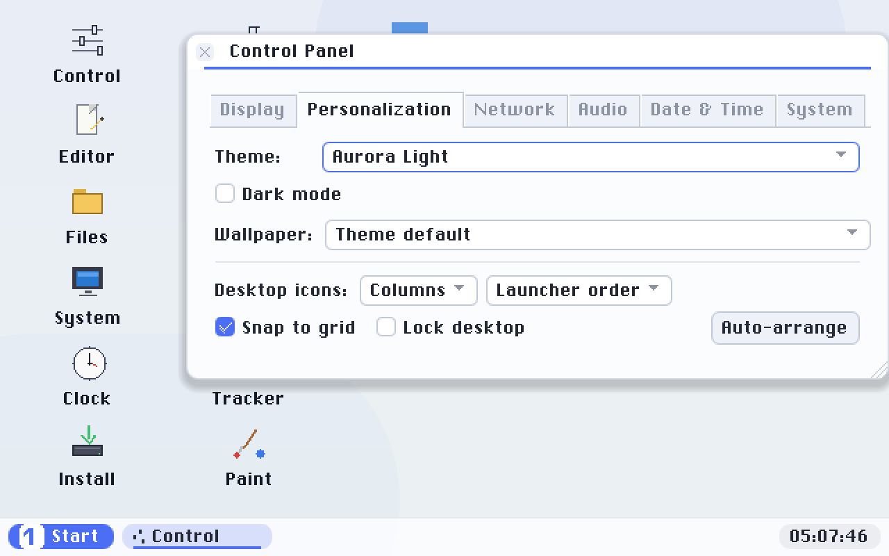
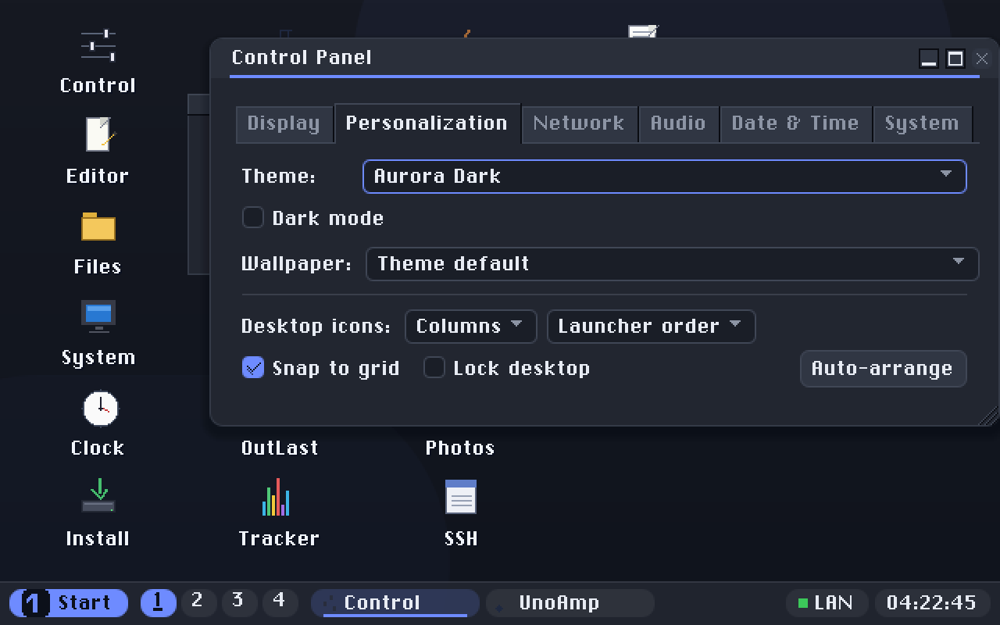
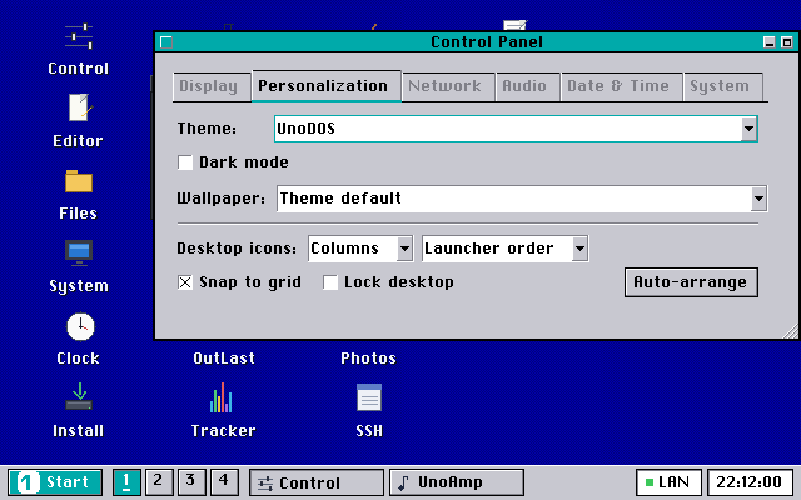
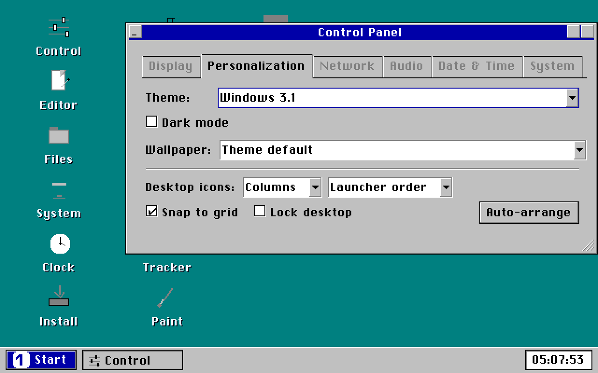
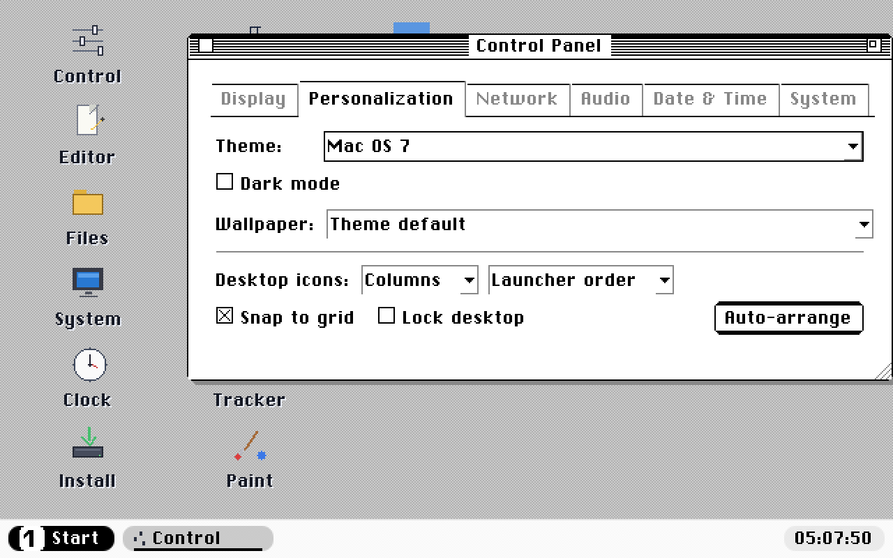
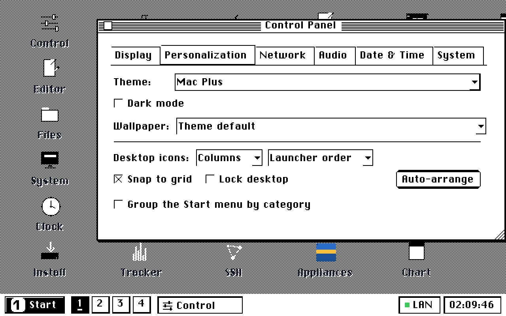
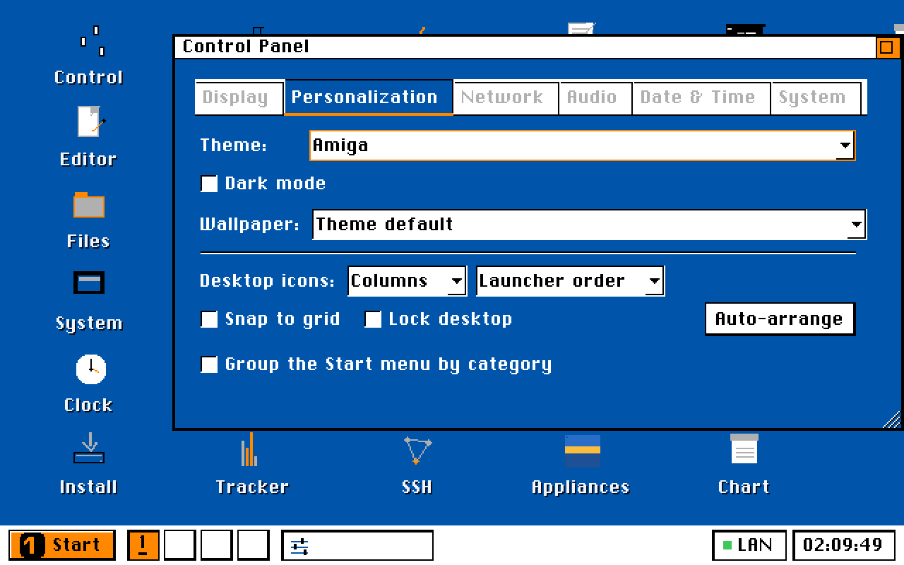
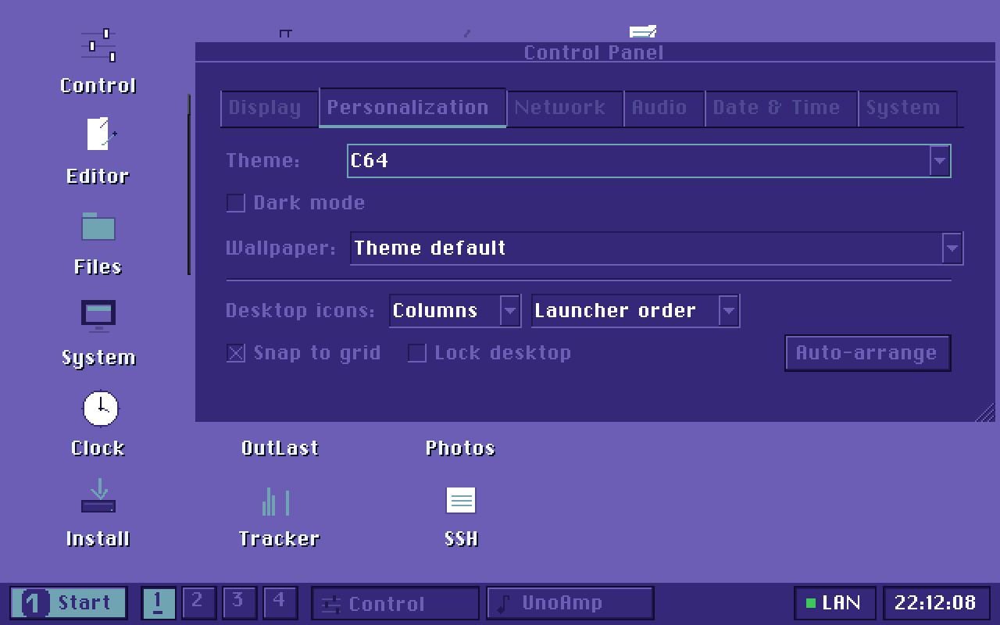
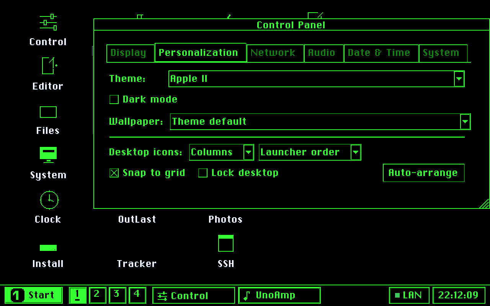
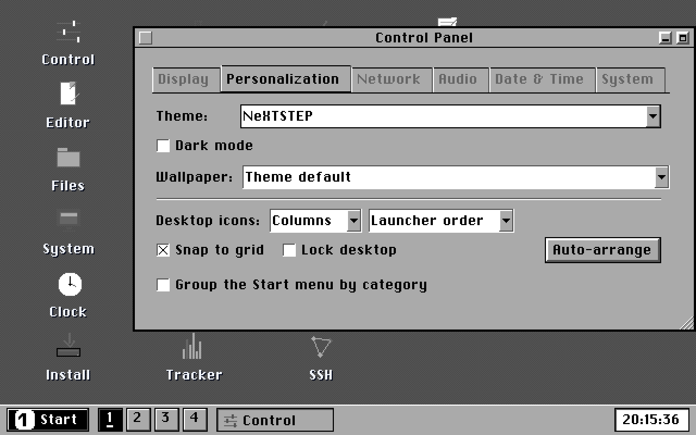
TrueType fonts
Pick a TrueType font and all the on-screen text restyles: titles, labels, buttons and lists, drawn smoothly and proportionally. Three fonts are included (DejaVu Sans, DejaVu Sans Mono and Ubuntu), and the built-in font stays the default.
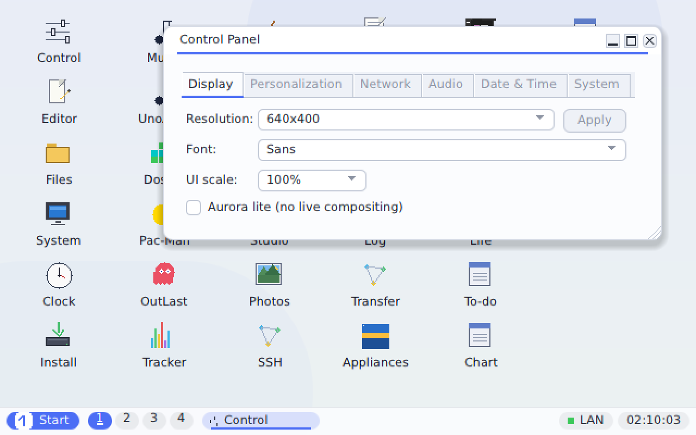
Resolution & scaling
Pick a resolution from the Control Panel and the desktop resizes to match, scaled to fill your screen while keeping the correct proportions.
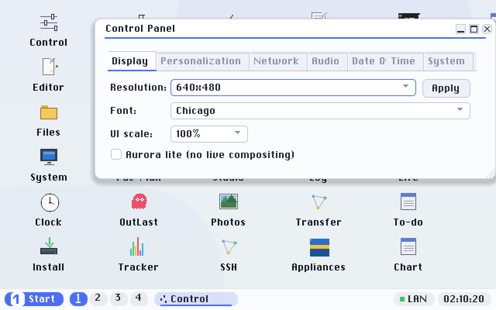